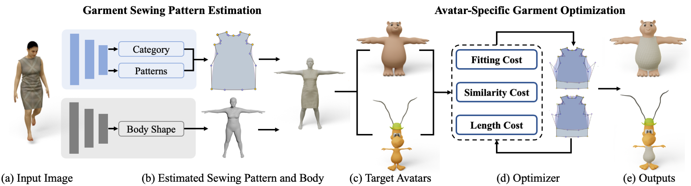

1Beijing Institute of Technology
2Yangtze Delta Region Academy of Beijing Institute of Technology, Jiaxing
3Beijing Institute of Fashion Technology
*Corresponding author
Demo
Abstract
In immersive VR applications, avatars shape users' identities and social presence. Personalization requires generating realistic outfits for avatars, often specified through a single reference image, while supporting seamless editing, adaptation to diverse avatars, and efficient rendering. Achieving these goals is challenging because VR avatars, even humanoid ones, exhibit substantial variations in body shapes and topologies. This inherent diversity makes it difficult to collect sufficient paired data, impeding the evolution of generalizable end-to-end image-to-garment models. To this end, we propose Tailor, a two-stage framework that dresses 3D humanoid avatars from a single reference image while preserving the wearing effects observed in the image. In the first stage, Tailor leverages a structured garment representation based on sewing patterns, enabling the network to predict garments in a low-dimensional, interpretable, and topology-independent space. In the second stage, Tailor performs instance-specific optimization to adapt the predicted sewing pattern to the avatar, ensuring consistent wearing effects across varying avatars. Furthermore, this framework also enables seamless garment editing, on-the-fly adaptation, and real-time rendering, making it particularly suitable for large-scale VR environments. Extensive experiments demonstrate that Tailor achieves results comparable to professional manual designs and produces garments that are both visually appealing and better aligned with reference styles than those generated by naive pattern-scaling baselines, as validated through human perceptual studies.
Method

Figure 1. Pipeline Overview. Tailor synthesizes image-referenced garments for diverse avatars with arbitrary body shapes and topologies through a two-stage process. The first stage estimates both sewing patterns and body shape from the reference image (a), yielding a dressed template mannequin (b). The second stage dynamically optimizes the parameters of the predicted sewing patterns (d) to dress the target avatars (c), ensuring the final outputs (e) preserve the style fidelity and fit quality of the reference.
Citation
@article{wang2026what,
author={Wang, Zan and Li, Anqi and Li, Yixuan and Liang, Wei and Ning, Bing},
journal={IEEE Transactions on Visualization and Computer Graphics},
title={What You See Is What You Wear: Crafting Garments for Diverse Avatars with Consistent Wearing Effects},
year={2026},
volume={32},
number={5},
pages={4408-4418},
doi={10.1109/TVCG.2026.3680706}
}